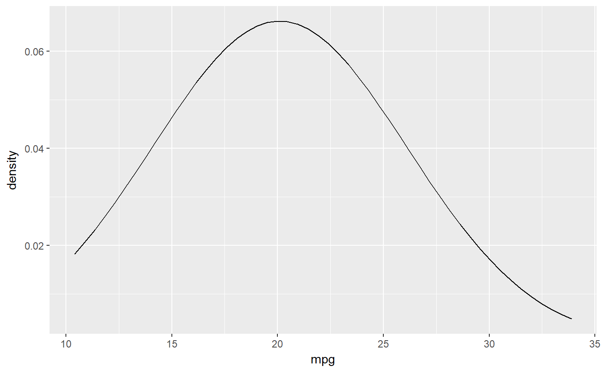
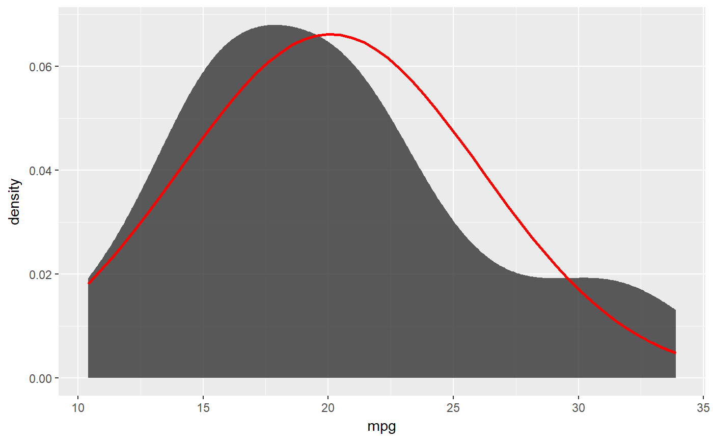

A ggplot2 layer that fits and plots a theoretical normal density function.
May be used to visually compare between empirical and theoretical normal
distributions.
stat_normal_density(mapping = NULL, data = NULL, geom = "line",
position = "identity", na.rm = FALSE, show.legend = NA,
inherit.aes = TRUE, trim = 0, ...)
Arguments
| mapping |
Set of aesthetic mappings created by aes() or
aes_(). If specified and inherit.aes = TRUE (the
default), it is combined with the default mapping at the top level of the
plot. You must supply mapping if there is no plot mapping. |
| data |
The data to be displayed in this layer. There are three
options:
If NULL, the default, the data is inherited from the plot
data as specified in the call to ggplot().
A data.frame, or other object, will override the plot
data. All objects will be fortified to produce a data frame. See
fortify() for which variables will be created.
A function will be called with a single argument,
the plot data. The return value must be a data.frame., and
will be used as the layer data. |
| geom |
The geometric object to use display the data |
| position |
Position adjustment, either as a string, or the result of
a call to a position adjustment function. |
| na.rm |
If FALSE, the default, missing values are removed with
a warning. If TRUE, missing values are silently removed. |
| show.legend |
logical. Should this layer be included in the legends?
NA, the default, includes if any aesthetics are mapped.
FALSE never includes, and TRUE always includes.
It can also be a named logical vector to finely select the aesthetics to
display. |
| inherit.aes |
If FALSE, overrides the default aesthetics,
rather than combining with them. This is most useful for helper functions
that define both data and aesthetics and shouldn't inherit behaviour from
the default plot specification, e.g. borders(). |
| trim |
(numeric) Fraction of points to trim before computing mean and
standard deviation, which are used to construct
theoretical normal distribution.
Number between 0 and 1. Default is 0. |
| ... |
other arguments passed on to layer(). These are
often aesthetics, used to set an aesthetic to a fixed value, like
color = "red" or size = 3. They may also be parameters
to the paired geom/stat. |
Computed variables
- density
normal density
- ndensity
normal density scaled to maximum of 1
- count
normal density * number of points
Examples

